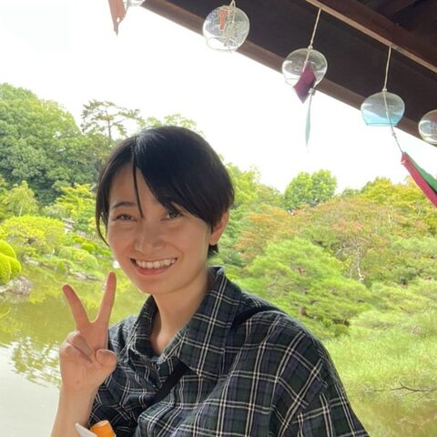

Hina Motoyoshi
Trinet Corporation · Japan
MSc in life science from Rikkyo on the intracellular localisation of chloroplast proteins. Platform engineer from 2023, joined Trinet in December 2025, and now works with DBCLS on operational improvements. Lately interested in AI guidelines, guardrails and coding frameworks.
Topics: Cloud/HPC, Web dev, LLM/AI
Codes in: Python, Terraform, Docker